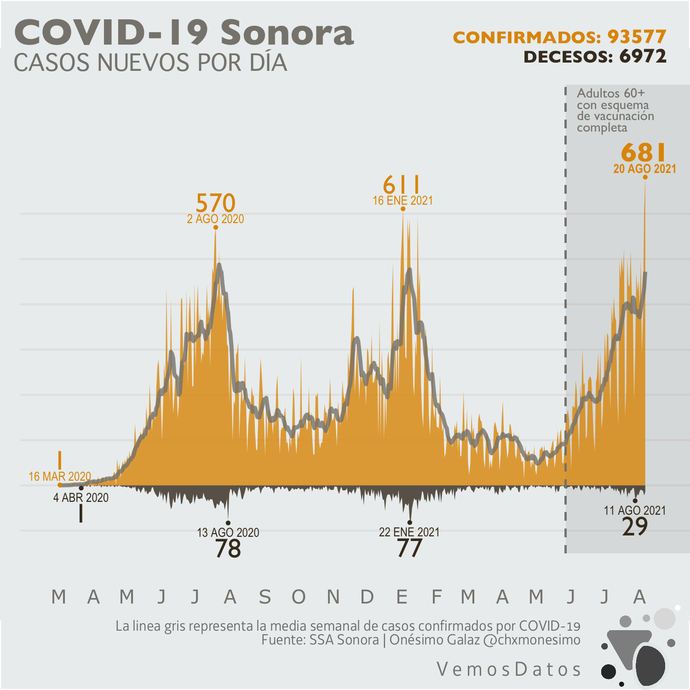
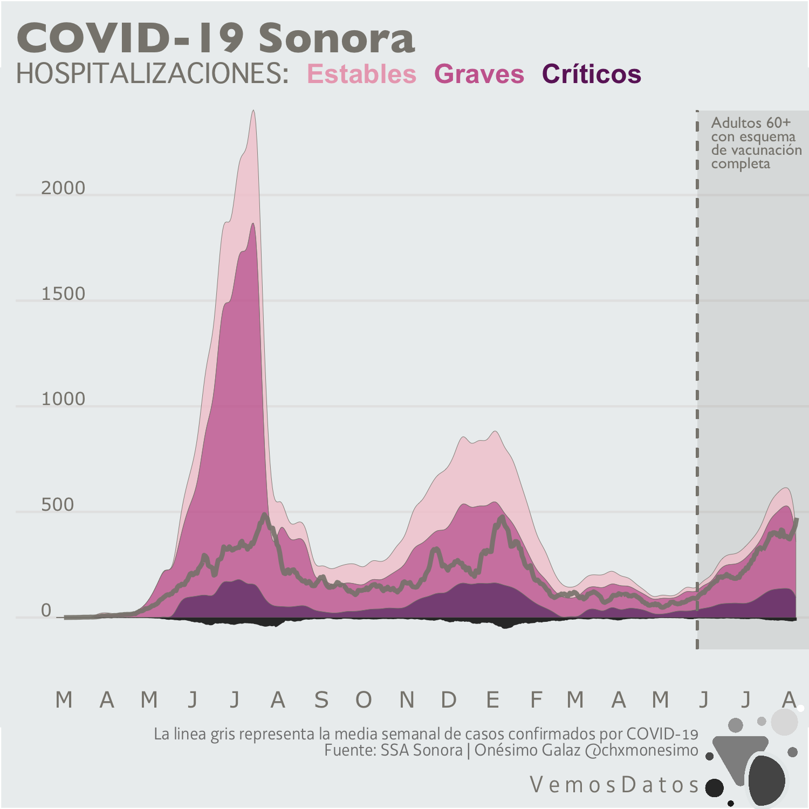
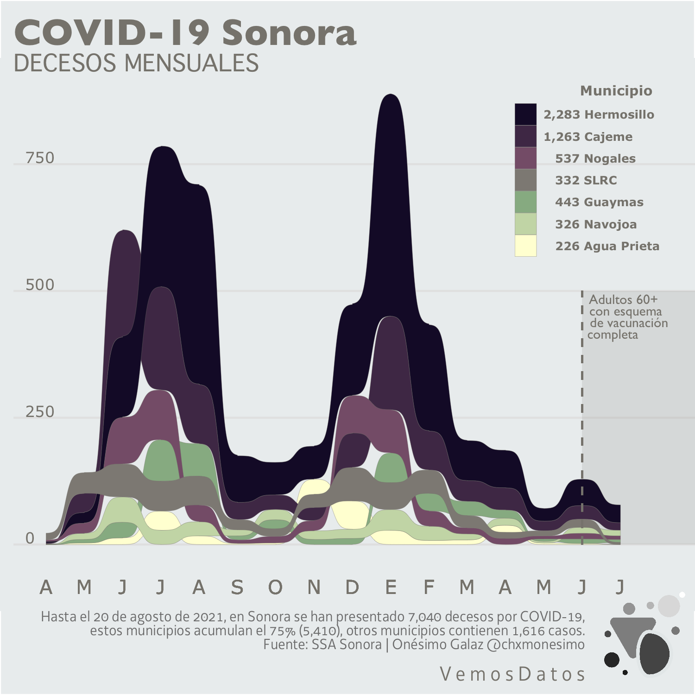
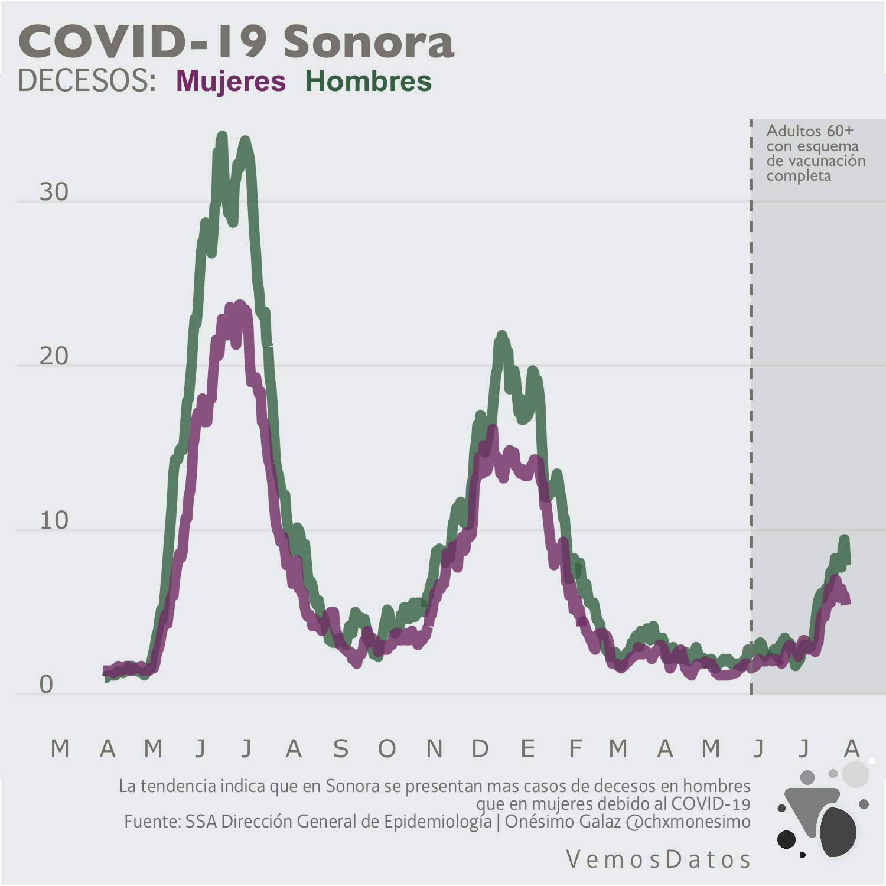
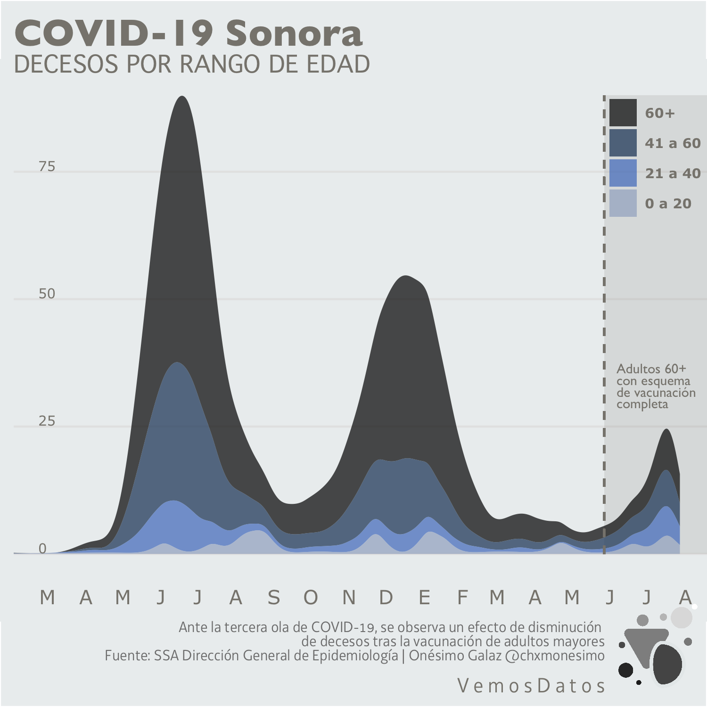

Con respeto a quienes han padecido las consecuencias de esta enfermedad, a continuación se presenta una serie de gráficos sobre los casos confirmados y de decesos debido a COVID-19.
Aun con el hecho de que Sonora se encuentra en el repunto de la tercera ola de contagios, equiparable a las dos anteriores, es de reconocer que la vacunación que dio prioridad a los adultos mayores ha tenido un efecto de reducción en la tasa de decesos por coronavirus

La hospitalización de pacientes confirmados con COVID-19 se ha reducido en comparación con anteriores repuntes de contagios, con excepción en la incidencia de pacientes en estado crítico

En Hermosillo se ha registrado la mayor cantidad de decesos por el virus SARS-CoV-2. Mientras que la incidencia del coronavirus que se observa en las tres olas de contagio presenta patrones similares entre si, actualmente, Sonora mantiene tendencia a la baja en la tasa de mortalidad. Un rasgo importante en la interpretación de estos datos es el efecto que ha tenido la vacunación en la disminución de la tasa de decesos en la entidad.

En términos generales se ha registrado una mayor cantidad de decesos en hombres que en mujeres. Cabe mencionar que las diferencias de la respuesta del sistema inmune entre sexos es un factor que incrementa la probabilidad de la severidad con la que se manifiesta la enfermedad, ya que el sistema inmunitario adaptativo de los hombres envejece mucho más rápido que el de las mujeres y además, las mujeres tienen un sistema inmunitario adaptativo muy robusto (muchos de cuyos genes se alojan en el cromosoma X)

La mayoría de los decesos en Sonora afectan a personas adultos mayores de 60+. Esto puede deberse a condiciones subyacentes que afectan a un gran número de personas mayores como padecer comorbilidades (diabetes, hipertensión, obesidad, tabquismo, etc.) y carecer de recursos suficiente para tener acceso a servicios de salud esenciales. El enfoque prioritario para la aplicación de la vacuna sobre este sector de la población ha reducido la mortalidad en hasta en un 75%

{{% tweet "1429197446689681412" %}}